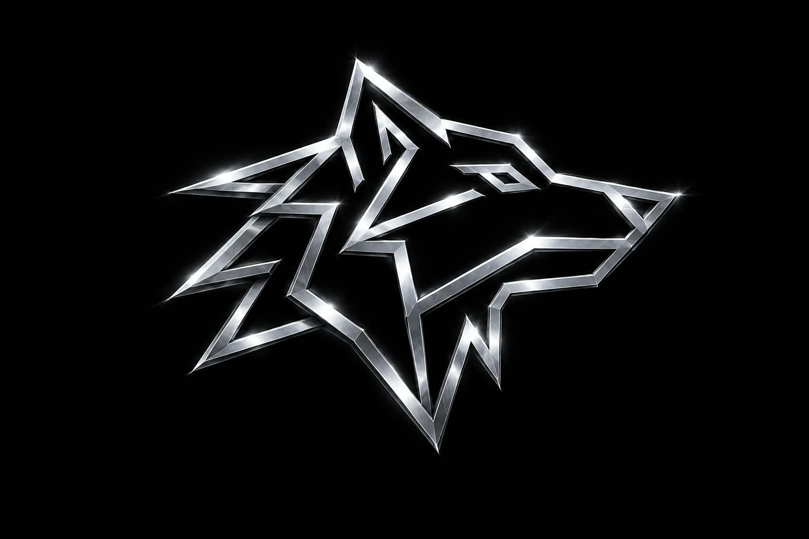
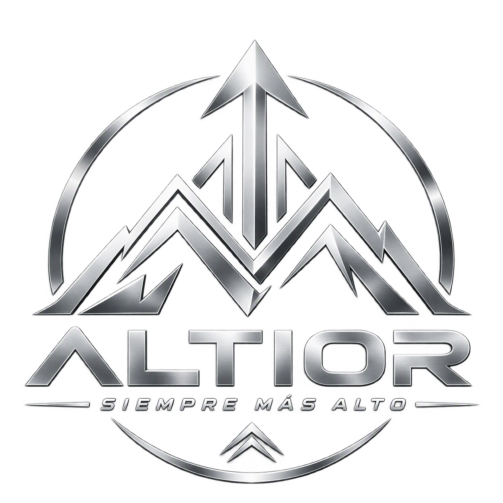

CORE
01. RECONSTRUCCIÓNDESPUÉS DE TOCAR FONDO TODO COMIENZA DESDE ADENTRO

Por eso sabemos lo que cuesta subir.
Esta es la historia que sostiene cada prenda de ALTIOR.
ALTIOR no nació desde la comodidad ni desde la ventaja. Nació después de tocar fondo, cuando la derrota pesaba más que las ganas, cuando todo parecía detenerse y no había una salida clara sobre cómo volver a levantarse.
De ese quiebre nació una decisión: no quedarnos ahí. Entendimos que la verdadera fuerza no empieza cuando ya ganaste, sino cuando decides avanzar aun sin tener todas las respuestas.

Cada avance, por pequeño que parezca, es una victoria real. ALTIOR existe para recordarte que caer no es el final.
Creamos nuestras líneas como un lenguaje de reconstrucción y avance, para acompañar a quienes están peleando su propio regreso.

DESPUÉS DE TOCAR FONDO TODO COMIENZA DESDE ADENTRO

EL ASCENSO COMIENZA AQUÍ. NO NACIMOS PARA PERMANECER ABAJO

LA EVOLUCIÓN NUNCA SE DETIENE. NO ERES QUIEN ERAS AYER

INCLUSO DESPUÉS DE ALCANZAR LA GRANDEZA, QUEDA ALGO MÁS POR CONQUISTAR
Cuatro compromisos que guían cada decisión de ALTIOR.
Demostrar que haber tocado fondo no define el final de nadie, sino el punto exacto donde puede empezar una versión más firme.
Conectar con personas que han sentido el peso de la derrota y buscan una razón concreta para volver a ponerse de pie y avanzar.
Acompañar cada etapa del camino —desde reconstruir las bases con CORE y exigirte con APEX, hasta adaptarte con EVOLUTION y marcar diferencia con ECLIPSE— sin perder la humildad del origen.
Que quien use ALTIOR sienta respaldo, carácter y pertenencia en una marca que entiende lo que es caer y elegir levantarse.